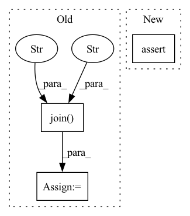

Pattern ID :36188
Before Change
model = ImplicitDQN(action_space=108, crop_sky=True)
policy = DQNPolicy(cfg.policy, model=model)
tb_logger = SummaryWriter(os.path.join("./log/" , "serial" ) )
learner = BaseLearner(cfg.learner, policy.learn_mode, tb_logger)
collector = SampleCollector(cfg.policy.collector, collector_env, policy.collect_mode, tb_logger)
replay_buffer = AdvancedReplayBuffer(cfg.policy.other.replay_buffer, tb_logger)After Change
tcp_list = parse_carla_tcp(cfg.server)
env_num = cfg.env.env_num
assert len(tcp_list) >= env_num, \
"Carla server not enough! Need {} servers but only found {}.".format(env_num, len(tcp_list))
env_args.steps_image = [-10, -2, -1, 0]In pattern: SUPERPATTERN
Frequency: 4
Non-data size: 3
Instances Fragment ID: 102626397
Project Name: opendilab/di-drive
Commit Name: 140d1a26bbba0681936f8f15167f38b1a06288ea
Time: 2021-09-19
Author: sissure@qq.com
File Name: demo/implicit/train_rl.py
M Class Name: AnonimousClass
N Class Name: AnonimousClass
M Method Name: main(3)
N Method Name: main(3)
M Parent Class:
N Parent Class:
M File Name: demo/implicit/train_rl.py
N File Name: demo/implicit/train_rl.py
M Start Line: 165
M End Line: 214
N Start Line: 168
N End Line: 222
Before Change
train_path = os.path.join(
root, tag, "chest_xray", "train")
else:
train_path = os.path.join(
root, "chest-xray" , "train" )
super(ChestXrayDataset, self).__init__(
root=train_path, transform=self.transform)
elif mode == "val":After Change
tag = "chest-xray-pneumonia"
modes = ["train", "val", "test"]
assert mode in modes, "Available options for mode: train, val, test"
self.target_transform = target_transform
Fragment ID: 102626398
Project Name: tuttelikz/farabio
Commit Name: bd0374049d13c5b0d7cad83da095e2cbc01725d2
Time: 2021-07-29
Author: s.askaruly@gmail.com
File Name: farabio/data/biodatasets.py
M Class Name: ChestXrayDataset
N Class Name: ChestXrayDataset
M Method Name: __init__(8)
N Method Name: __init__(7)
M Parent Class: ImageFolder
N Parent Class: ImageFolder
M File Name: farabio/data/biodatasets.py
N File Name: farabio/data/biodatasets.py
M Start Line: 101
M End Line: 144
N Start Line: 100
N End Line: 131
Before Change
val_path = os.path.join(
root, tag, "chest_xray", "val")
else:
val_path = os.path.join(
root, "chest-xray" , "val" )
super(ChestXrayDataset, self).__init__(
root=val_path, transform=self.transform)
elif mode == "test":After Change
tag = "chest-xray-pneumonia"
modes = ["train", "val", "test"]
assert mode in modes, "Available options for mode: train, val, test"
self.target_transform = target_transform
Fragment ID: 102626393
Project Name: tuttelikz/farabio
Commit Name: f1d17ab62f7226de3ebd472422d38aa48b177fc3
Time: 2021-07-27
Author: s.askaruly@gmail.com
File Name: farabio/data/biodatasets.py
M Class Name: ChestXrayDataset
N Class Name: ChestXrayDataset
M Method Name: __init__(8)
N Method Name: __init__(7)
M Parent Class: ImageFolder
N Parent Class: ImageFolder
M File Name: farabio/data/biodatasets.py
N File Name: farabio/data/biodatasets.py
M Start Line: 101
M End Line: 144
N Start Line: 100
N End Line: 131
Before Change
cache_path = os.path.join(str(Path.home()), ".cache", "jittor", "lock")
cmd = f"rm -rf {cache_path} && cache_name=lock {mpirun_path} -np 2 {sys.executable} -m jittor.test.test_example"
else:
cache_path = os.path.join( str(Path.home()), ".cache" , "jittor" )
cmd = f"{mpirun_path} -np 2 {sys.executable} -m jittor.test.test_example"
print("run cmd", cmd)
assert os.system(cmd) == 0
After Change
else:
cmd = f"{sys.executable} -m jittor.test.test_example"
print("run cmd twice", cmd)
assert os.system(f"{cmd} & {cmd} & wait %1 && wait %2") == 0
if __name__ == "__main__": Fragment ID: 102626389
Project Name: jittor/jittor
Commit Name: 987d42cc886cc4097f48ef62bb687c2d26bfe7a6
Time: 2020-04-11
Author: randonlang@gmail.com
File Name: python/jittor/test/test_lock.py
M Class Name: TestLock
N Class Name: TestLock
M Method Name: test(1)
N Method Name: test(1)
M Parent Class: unittest.TestCase
N Parent Class: unittest.TestCase
M File Name: python/jittor/test/test_lock.py
N File Name: python/jittor/test/test_lock.py
M Start Line: 17
M End Line: 26
N Start Line: 18
N End Line: 23